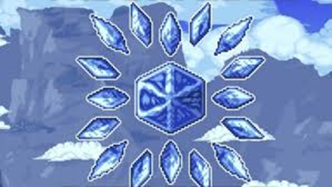
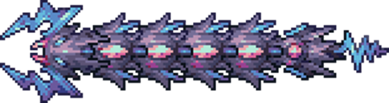
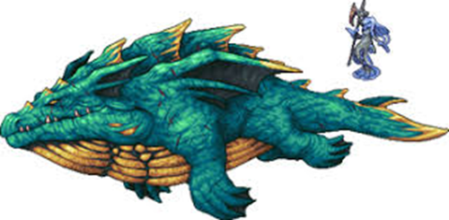
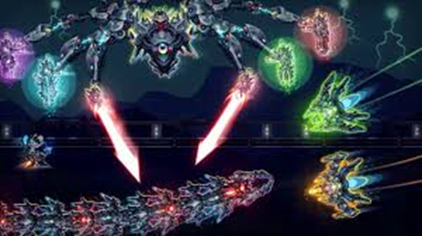
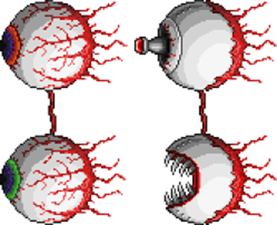

Warnings
This challenge is not for the faint of heart, this page will explain which bosses will give the most trouble through the game.
1. Cryogen

Cryogen is a boss like an ice cube that moves all over and relies mostly on projectiles to attack. As such, most of this fight the player must focus on dodging while waiting for the boss to do a charging attack to get damage off. This boss is one that is able to be skipped in progression, but it drops one of the better weapons for its stage of progression for the true melee class.
2. Storm Weaver (first phase)

Even though this boss is a worm-type boss, the first phase poses an issue for the true melee sub-class. This boss dashes around the player launching projectiles and turning sharply while its only weak point is the end of it’s tail. In the first phase, all damage except that done to the tip of the tail is brought all the way down to single digits while the boss itself has 800,000+ health. To end the first phase, the player must damage the tail enough that the armor falls off of the main body leading the whole boss being much more vulnerable to damage allowing the player to defeat the boss easier.
3. Anahita and Leviathan

This boss, the main issue comes with there being two enemies and one of them mainly uses projectiles. Leviathan is simple to take down due to its tendency to charge the player and the massive hitbox it has, but at this stage in the game, Anahita has a tendency to stay out of range of most true melee weapons. Though she does sometimes charge the player, she also sometimes locks her position in a specific location relative to the player keeping her out of range of all true melee weapons. Most of the attacks she has are projectiles that must be avoided and originate from her, making it dangerous to get close enough to damage her, leading the fight to take a long time.
4. Exo Mechs

Even though Thanatos of the Exo Mechs is quite easy to demolish using the true melee sub-class the other two of the Exo Mechs rarely give a chance for the player to hit them. Artemis and Apollo are similar to an earlier boss called the Twins but most of their attacks they stay relative to the screen at the very edges left and right while shooting projectiles. Aries also stays at a position relative to the screen (that being the top) however some weapons are able to reach him and he has an attack that allows the player to get decently close while he stays in one position. The fight overall will be determined by when the player defeats Artemis and Apollo.
5. The Twins

While nowhere near as annoying as the other bosses on this list, the Twins, similar to many of the other bosses, tend to launch projectiles at the player from a distance while attempting to keep their distance. The first phase of the fight is interchanging projectile volleys with dash attacks which give ample oppurtunity to hit the boss. In the second phase, Spazmatism (the green one) is the easier one to defeat due to its tendency to stay close to the player while launching a flamethrower and dashing. The other of the twins, Retinazer, keeps its distance for the whole of second phase, though it is possible to get close enough to hit if the danger of getting hit by it’s lazers is okay for the player.